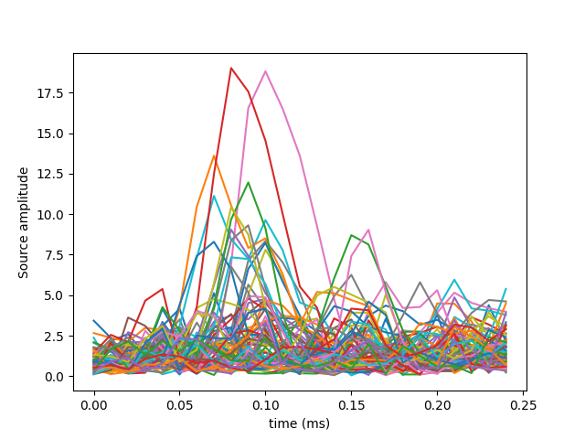

STC files contain activations on cortex ie. source reconstructions
Out:
Successfully extracted to: [u'/home/ubuntu/mne_data/MNE-sample-data']
stc data size: 7498 (nb of vertices) x 25 (nb of samples)
# Author: Alexandre Gramfort <alexandre.gramfort@telecom-paristech.fr>
#
# License: BSD (3-clause)
import matplotlib.pyplot as plt
import mne
from mne.datasets import sample
print(__doc__)
data_path = sample.data_path()
fname = data_path + '/MEG/sample/sample_audvis-meg'
stc = mne.read_source_estimate(fname)
n_vertices, n_samples = stc.data.shape
print("stc data size: %s (nb of vertices) x %s (nb of samples)"
% (n_vertices, n_samples))
# View source activations
plt.plot(stc.times, stc.data[::100, :].T)
plt.xlabel('time (ms)')
plt.ylabel('Source amplitude')
plt.show()